Pourquoi j'ai été au Japon ?
Comme beaucoup d'enfants, j'ai été bercée par les jeux vidéos.
Avec Super Mario et Pokémon, c'est la série des jeux vidéos Tenchu qui m'a passionné.
Qui n'a jamais rêvé d'aller la nuit comme les ninjas en sautant de toit en toit ? Qui n'a jamais rêvé de voir le Japon de l'époque Sengoku avec ses maisons en bois et ses temples traditionnels?
Les années qui suivirent, les mangas et les animes débarquèrent en nombre sur les écrans et dans les librairies. Avec la pop culture japonaise, c'est tout le quotidien de ce pays qui s'offre à nous : loisirs, vie au lycée, cuisine, ...
En 2019, je suis donc partis au Japon pour cinq semaines. De Tokyo à Kyoto, j'ai suivi la route du Tokaido avant de poursuivre vers Hiroshima. J'ai mangé des sushis et plein d'autres spécialités culinaires du pays. J'ai dépensé mon argent en japoniaiseries inutiles, me suis habituée à leurs super toilettes et reçu pleins de petits cadeaux de la part des japonais.

Ce que j'aime à Tokyo
L'agglomération de Tokyo est la métropole la plus peuplée du monde avec presque 43 000 000 d'habitants. Autant dire qu'il y a de nombreuses choses à y faire !
Tokyo est une ville qui ne dort jamais et qui se parcours le jour et la nuit. Ses quartiers, ses salles de jeux et ses restaurants ne dorment jamais !
Voici quelques endroits que j'ai visité.
Les quartiers de Tokyo à voir !
-
Le parc de Ueno
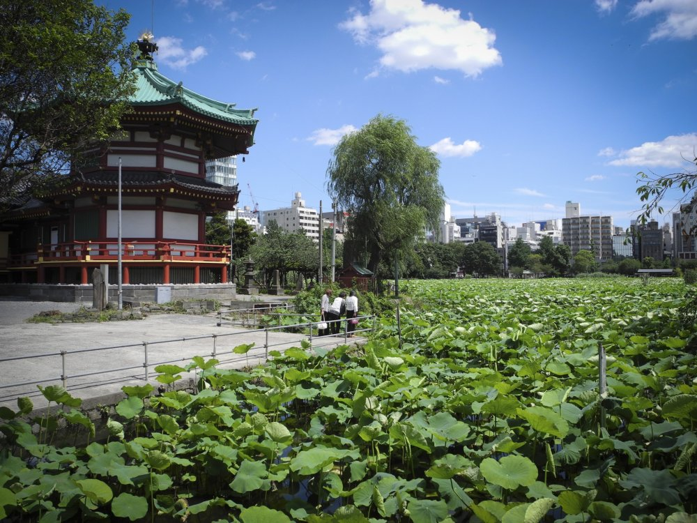Le parc de Ueno est un excellent lieu pour se ressourcer en plein coeur de Tokyo. La période de floraison des fleurs de cerisier est idéale pour s'y promener. Il est célèbre pour son zoo qui abrite les seuls panda du Japon
Au sud-ouest, il est bordé par l'étang de Shinobazu qui est entièrement recouvert de nénuphars
-
Le sanctuaire d'Asakusa
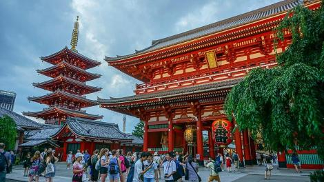Le temple Senso-Ji à Asakusa est un lieu très touristique. C'est le plus vieux temple bouddiste de Tokyo dédié à la déesse Kannon. Cela reste néanmoins un endroit très sympa à visiter avec son magnifique jardin et ses bassins avec des grosses carpes.
Le petite ruelle aux alentours abritent de nombreuses petites boutiques de souvenir où on peut s'acheter des objets pseudo-traditionnels à offrir aux amis qui ne pourront jamais y aller.
-
La nuit à Shinjuku
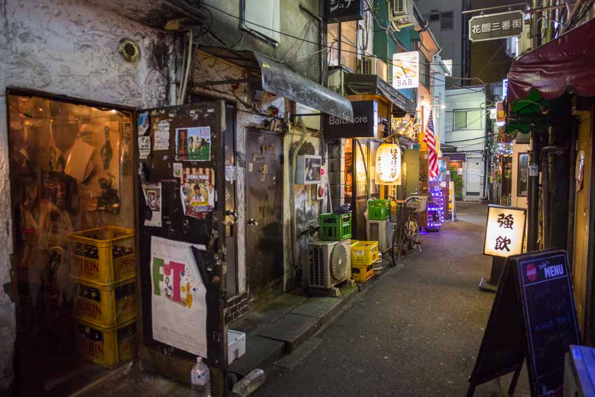Shinjuku est le quartier le plus connu du Tokyo de nuit. Quartier des bas-fonds, c'est l'ancien lieu de rassemblement des Yakusas.
De nos jours bien moin dangereux, le quartier possède de nombreux restaurants à Ramen, des salle d'arcade ouverte H24 et tout un tas de drôles de types qui cherchent à embrunguer les touristes mâles dans les bars à hôtesses.
La célèbre rue du Golden Gai concentre également de minuscules bars où se rassemblent les artistes noctambules de la capitale
-
Odaiba l'île du Gundam
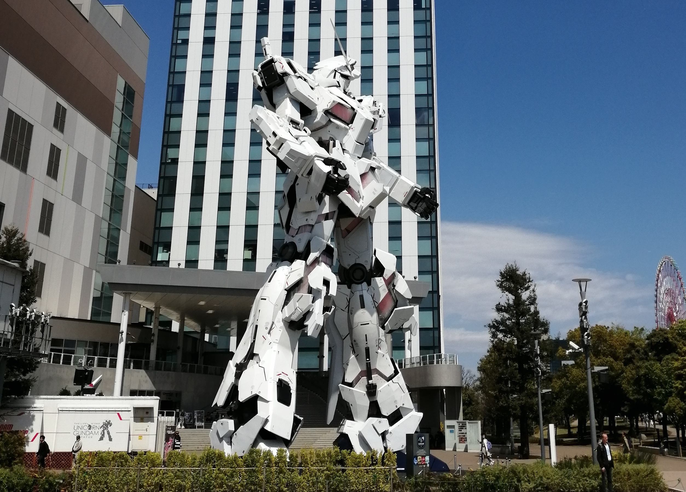Odaiba est l'île artificielle où se passe la saison 1 de Digimon. Pour ceux qui ne connaissent pas Digimon, c'est l'île d'un Gundam géant et de la Statue de la Liberté.
En toute logique, on y trouve une immense boutique Gundam, ainsi q'un musée de voiture ancienne et un immense Onsen où on peu se baigner nu si on a pas de tatouage !
Kansai la plus belle région du monde
Avec Kyoto, Nara et Osaka, le Kansai est une région qui reçoit des visiteurs du monde entier. C'est un lieu traditionnel chargé d'Histoire: de Kyoto la ville impériale à Osaka, la ville des marchants et des Yakusas.
Kansai la région historique du Japon !
-
La montagne des singes à Kyoto
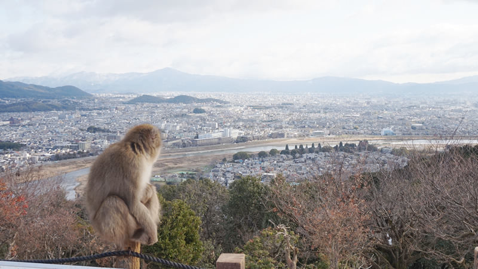A la périphérie de Tokyo, il existe une colline où les singes sont en liberté. Les animaux sont rassemblés au sommet où ils ont l'habitude de recevoir de la nourriture achetée par les visiteurs.
Si vous n'en avez pas, ils essaieront quand même de vous voler !Le lieu offre aussi une vue incroyable sur Kyoto !
-
Le temple doré
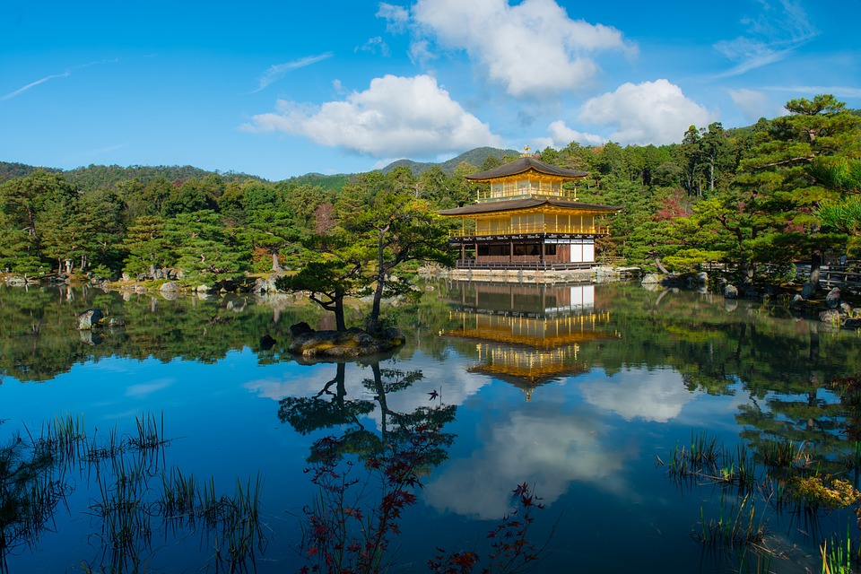Le pavillon dor, où Shinkaku-Jin, est le plus célèbre temple du Japon. Il a été jadis incendié par un de ses apprentis avant d'être reconstruit à l'identique.
Cet évènement à fait l'objet d'un roman, nommé avec surprise "Le pavillon d'or", écrit par Yukio Mishima (un célèbre écrivain japonais avec quelques soucis psychologiques).
-
La nuit à Shinsekai
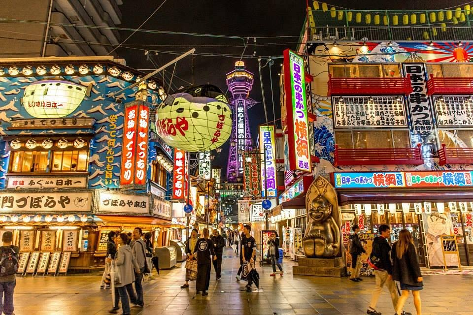Shinsekai à Osaka c'est le quartier de Yakusas dans la ville des Yakusas ! Peu dangereux comparé à Marseille, c'est une ambiance unique avec ses néons, ses sexshopes et ses bars à hôtesses !
Plus généralement, c'est un quartier très représentatif de l'état d'esprit d'Osaka, moins conventionnel que Tokyo
-
Nara et ses daims
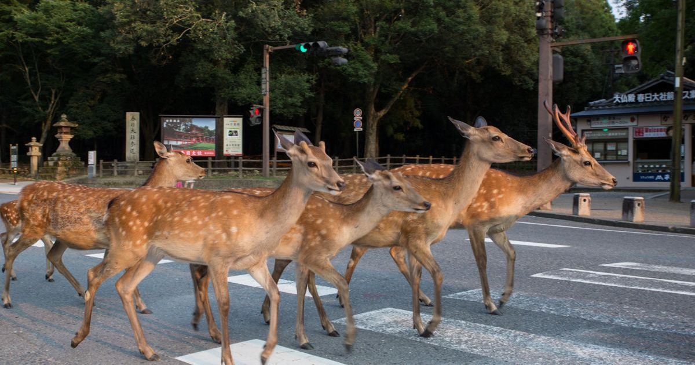Nara est une ville très connue pour les photos de ses daims qui se promènent en liberté. Et c'est tout ce que vous trouverez ici, des daims et des jolis temples traditionnels coincés entre deux touristes!
Hiroshima et son lourd passé
La ville de Hiroshima est historiquement connue pour avoir subit la première attaque nucléaire. La ville a été reconstruite et est la plus peuplée du Chugoku avec plus de 1 million d'habitants ! C'est un site historique et économique important du Japon.
La région de Hiroshima
-
Le dôme du Genbaku
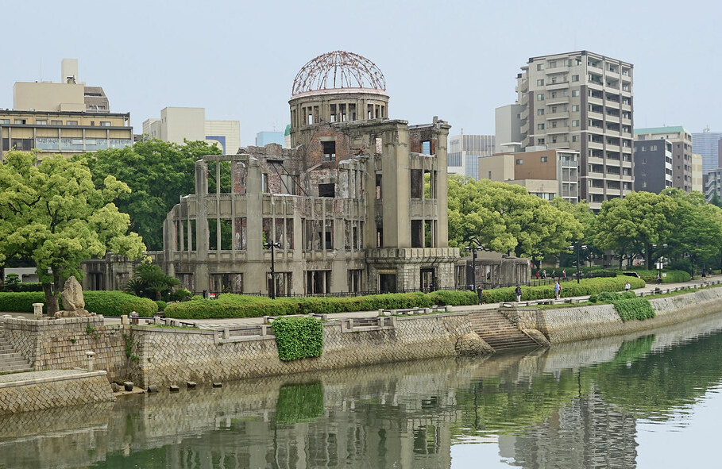Le dôme symbolise l'attaque atomique du 6 Août 1945. Ce batiment accueillait des entreprises pendant la Seconde Guerre Mondiale. Se trouvant juste en dessous de la bombe quand elle fut larguée, il a été en partie épargné par la déflagration.
-
La commémoration du 6 Août
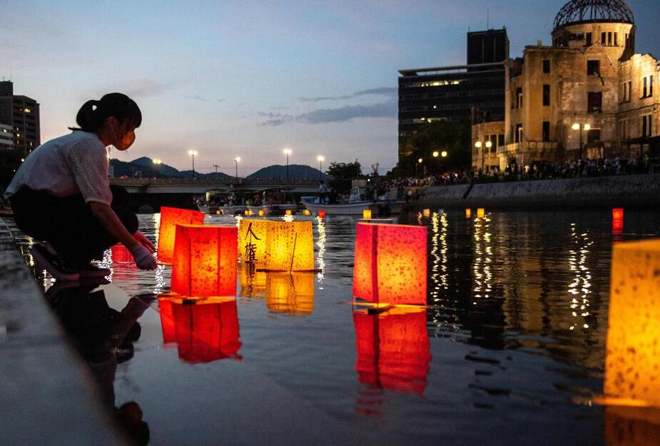Tous les ans, les 6 Août, Hiroshima commémore l'horreur de la bombe atomique et accueille des représentants politiques du monde entier. Le matin, une cloche sonne à 8h15, heure à laquelle le bombardier américain a laché la bombre A. Le soir, des milliers de personnes déposent sur le fleuve des lanternes pour honorer la mémoire des disparus.
-
L'île de Miyajima
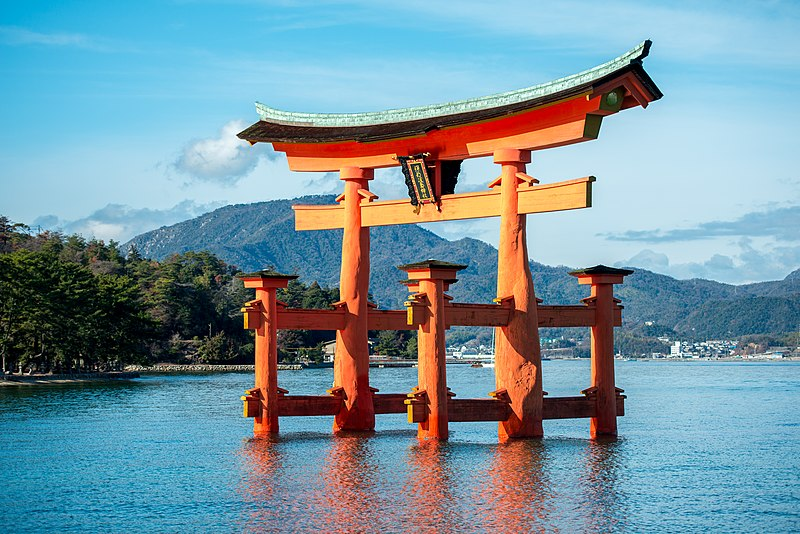L'île de Miyajima est un lieu très touristique du Chugoku. Elle est très connu grâce à son temple qui illustre les guides touristiques du Japon. C'est un endroit très joli avec beaucoup de daims en liberté comme à Nara (mais en beaucoup plus gentils)
-
Le jardin Shukkei-en
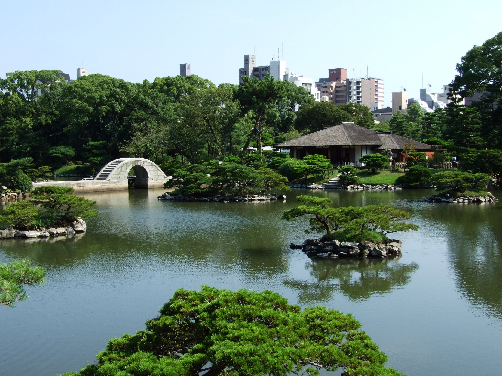Le Shukkei-en est un jardin de la ville d'Hiroshima. Il a été construit en en 1620 à l'époque Edo. Entièrement rasé par la bombe atomique, il fut rénové et est aujourd'hui à nouveau magnifique avec ses carpes koï de plus de un mètre et les hérons qui viennent le visiter.